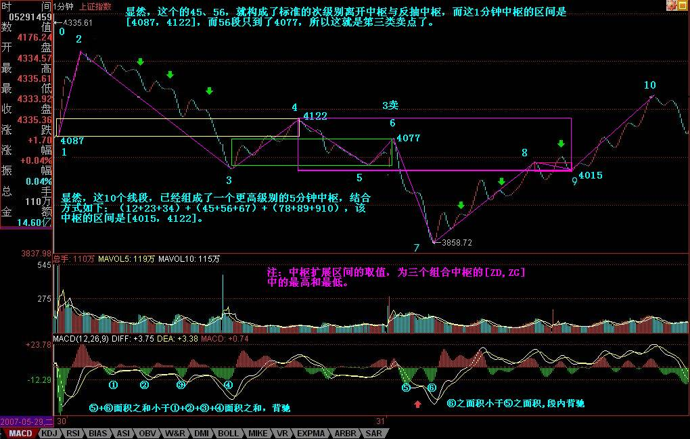

|
 |
教你炒股票57：当下图解分析再示范
(2007-05-31 22:35:44)
部分由于管理层的夜半歌声，本周已经说了4天股票，本ID就来一个大满贯，再说一天，不过下不为例，天天说股票，一周说5天，各位不审美疲劳，本ID也烦了。
看到很多人还是发蒙，因此，就用这两天的1分钟图，继续说说怎样进行图解。当然，这些图解都是可以当下进行的。今天看回帖，好象有人希望本ID在什么QQ上即时发布什么提示之类的，这绝对不可以，QQ对于本ID来说只是用来419的，用来说股票也太浪费了，而且，本ID那4小时是天王老子都不能打扰的，说句不太客气的话，本ID的资金，大概比来这里所有人的资金之和都多，本ID忙着上QQ，出问题了谁负责？所以，最多就这样形式了，很多事情，还是要靠自己多练习，本ID最多就是一个陪练的。
必须要再次强调，不熟练的投资者，一定不能全仓进行操作，基本的仓位应该拿着中长线的股票，部分仓位可以用来练习，否则全仓操作，一旦来几次半生不熟的折腾，到时候连本都没了。而且一定要注意，卖点是在涨的时候出现的，不是追杀出来的，如果你砍了地板价，那一定不是在卖点上。只要是赚钱的，就没有卖错，宁愿卖早，不要卖晚。如果卖错了，就不看这股票，除非有新的买点。
还有，有人误解，认为本ID的方法就是拼命弄短线，这些人大概是跟孔男人学的中文，所以就这水平了。用本ID的方法，如果你选择年线级别操作，那比巴菲特还巴菲特，大概一个年线的买点后，至少到等几十年才有卖点，你就拿几十年吧，就怕你拿不住。还有，如果你是按周线级别操作，那这两年，至少指数上你根本没有卖点。至于按30分钟操作的，在一个30分钟第三买点后的中枢上移中，如果这上移是从10元开始，只要不形成新的30分钟中枢，那么就算到了100000元，你还是要拿着，为什么？没有卖点。所以那些说学了本ID理论就拿不住股票的，自己好好反思一下，究竟你学了什么？
闲话少说，看图解图。
对着图，首先要确定最小分析级别，也就是说，这级别以下的都可以看成是线段，而站在最小分析级别的角度，每一线段就是其次级别走势类型，三个线段重合部分就构成最小分析级别的中枢。
当然这些线段本身，可能都属于不同级别，这问题在前面已经说过了。例如本图，最小分析级别先规定为1分钟级别的，所以所有1分钟级别以下的，都是线段，在图上标记着数字，所有的[N，N+1]，都是线段。有人可能要问，01段是跳空缺口，23段上上下下，很复杂，怎么都是线段？因为这都不是1分钟的走势类型，里面没有1分钟的中枢，所以都是1分钟以下级别的，虽然缺口是最低级别的，当然比23段这种要低级别，但在1分钟级别显微镜下，没有区别，都可以看成是没有内部结构的线段。当然，如果你要考察23段的内部结构，也是可以的，但那就不是站在1分钟级别的基础上了。
由此可见，上图可以看成是10段线段构成的，线段中的波动，至少在分析1分钟级别的角度，就是可以忽略不计的。这里有一个地方是可能有疑问的，在23、78段5个带绿箭头指着的地方，似乎可以看成是一线段，但为什么没有？因为在这似乎是三段的结构中，第三段的都太微弱，把图形缩小后几乎就看不到了，对比一下89段带绿箭头的地方，这第三段就明显不同了，所以这是一个1分钟以下级别的上下上结构，而前面的不是。当然，如果你一定要说78段那箭头的地方很明显，那么78、89就合成一线段的上涨趋势了，这也可以，只是如果你是按这个标准的，那么所有和78段箭头位置微弱程度一样的，都要这样处理。本ID还是按图上的标记线段。
线段有了以后，一切都好分析了。当然，在当下时，例如在今早9点30分钟，是没有后面的线段的，但线段的标准，是一样的。你可以很精细地分析56段，是一个上下上的内部结构，其中下一段是跳空缺口，但无论如何，这就是一个线段。不过，由于前面12、23、34构成的中枢只有1分钟级别的，那么其构成第三类卖点的次级别就是1分钟以下级别的线段，这时候，就要考察一个有上下上结构的1分钟的次级别结构了，而56段显然符合这个结构，有明显的上下上，而45段也是符合1分钟次级别的要求的，注意，当考察1分钟的次级别时，就不能笼统地把所有1分钟以下的都看成1分钟的次级别了，因为这里的视点已经不同。显然，这个的45、56，就构成了标准的次级别离开中枢与反抽中枢，而这1分钟中枢的区间是[4087，4122]，而56段只到了4077，所以这就是第三类卖点了。
当然，在具体操作中，还可以特别精细地去分析这个问题，56段里的上下上，后上对前上的力度，从下面对应的MACD的柱子面积比就可以判断出不足来，因此这里就有很小级别的背驰，这都可以用当下分析的，当然，这样的精确度，需要操作者十分熟练并且反应与通道都十分快，并不要求每个人都有这个可能，这里只是进行分析，对大的级别，道理是一样的。
同样道理，67段里的内部结构下上下，后下力度也比前下弱，这从下面红箭头所指两绿柱子面积的对比就可以知道，所以这内部就有了背驰。注意，这67中的上，幅度上也很微弱，但时间比较长，是一个小的时间换空间的反弹，所以是可以看成一个上的，更重要的是，这上使得绿柱子回缩到0轴，这就更证明了这是一个不能忽视的有技术分析意义的反弹。
当行情走到6点时，34、45、56这三段，就可以看成是一个1分钟中枢了，当然，这种分法和原来[4087，4122]中枢的分解不同，但站在多义性的角度，这是绝对符合结合律的，当然是一个分解的方法。这分法，就使得23、67成为这中枢的一个震荡，从而可以用力度的方法来发现背驰。对于23、67下所有绿柱子面积之和，显然后者小，所以就知道，67只是针对[34、45、56]中枢的一个震荡，必然至少回抽中枢附近，而对67内部用区间套的方法进行精确定位，具体的看上一自然段的分析。按这种方法，7那买点的把握，就是很简单的事情了。注意，这都是可以当下分析的，根据当下的走势，自然就能把握。如果那7当成是第一类买点，那么9就是第二类买点了，这符合次级别上，次级别下，不创新低或盘整背驰的定义，对比一下2点和9点，一卖一买，都是第二类的。当然，在78里，其中的下也是一个第二类买点，但该买点的级别比9这点要低。
显然，这10个线段，已经组成了一个更高级别的5分钟中枢，结合方式如下：（12+23+34）+（45+56+67）+（78+89+910），该中枢的区间是[4015，4122]。这一点其实由6这个第三类卖点的存在以及后面的背驰，就可以知道，这中枢级别的扩展，是必然的。
注意，这是为了示范才分析1分钟的图，这类图是最复杂的，一般来说，级别越大的图越简单，而操作上，技术不好，通道不好的，一般不用1分钟的图，把级别放大点，这点必须明确。
 ================================================================================================= 每日解盘（2007-06-01)：
缠中说禅：
今天的走势就是[4015，4122]的中枢震荡，至少指数是不难看明白的。周五出现这样的走势很正常，各种心怀鬼胎的到处散播这消息那消息，散户当然如惊弓之鸟了。但今天的走势，对今后是有利的。这次的问题并不在于国家公布了什么，而是其公布的手法，如此手法，必须得到严惩，一个最直接的压力必须让用这种恶劣手法的人承担：一个骂名。周五开始，舆论将逐渐转向，一轮新的反思将开始，注意，管理层也不是一言堂。还要注意一点，这两天同时公布的是财政部国债的发行，所以，经过这次风险教育，应该能分流些人去买国债了。
不过散户确实需要有点教育，前段时间，不是有人叫嚣散户已经统治市场了？但跌两天，散户就蔫了。大资金永远都是市场的中流砥柱，没有大资金，没有这几天的聚会，像这几天北京股的走势能出现？看那些企图限制大资金的政策还出不出？有些大资金，那些管理层换了几茬了，依然屹立不倒，不断壮大，这些脑子进水的政策，除了害散户，能害得了谁？周末，这样的局面，就让管理层去收烂摊子，如果他们还喜欢这边打压，后面又来救市的游戏，那就玩吧，这种游戏已经10几年了，真正的牛人，只会在这种游戏中越来越牛。
但对于散户，这几天确实心里压力大了点，但这其实也没什么，本ID前面反复提到这样的典故：96年连续3天指数跌停，后来还创出新高。所以，那天公布消息，本ID一大早7点不到就上来，告诉一定要在第二、三类卖点卖掉，没卖的，那就算了，到今天还卖什么？大反弹是必然有的，以后的位置一定比这个位置高，关键是该走的时候，就不要有幻想。
注意，那种杀已经跌了30%，去追买不跌反涨的所谓强势股，知道有补跌这种概念吗？在混乱的市场中，更应该专一。
可以很理性地讨论这个问题，一个股票下跌40%，第一次反弹回20%，出一半或2/3，下来再买回来，在一次反弹上去，基本走的位置，就和没跌的时候差不多了，如果你现在有资金，在一股票下跌40%时补仓。这股票又不是什么被查庄股，那么，这种的操作基本风险很小，如果技术再好一点，看准一些买卖点，那么基本就等于高位走掉了。当然，以后再碰到这种情况，一定要在第二、三卖点出掉，那天，有多少人辜负了本ID7点不到就上来发帖子？
其实，纯技术上，现在的大走势并不坏，六月的调整没什么可说的，本ID那1/2线，现在也在4144点了，下面，这次上涨1/3的位置在3734点，这位置是第一支持位。没有特别的事情，这位置有很强支持。否则就要考验一半的位置，3434点。但至少现在，没有任何看到该位置的理由。（备注：从2/6的2541开始算）
从短线上看，还是[4015，4122]的中枢震荡，有技术的，继续按这震荡操作。下周最大的机会，就是暴跌个股的大反弹，特别注意那些下跌到年线、半年线等关键位置的个股，这些反弹的力度会厉害点。
2007-06-04 15:43:40
各位散户，为了中国资本市场的明天，为了以后不再有这样的暗算，为了有让管理层知道他们的权力不是可以任意挥舞的，今天，这样一个特殊日子里的特殊走势，是必须忍受的。今天收盘后，全世界的目光都会聚焦到这里来，虽然管理层今天早上的统一口径的在各大传媒中文章已经有点那意思，但还不够，认识不够深刻，用词依然有父母教育孩子的味道，投资者是需要被教育，但管理层同样需要。
技术上，上面的文章已经说得很清楚，看5月均线，经过今天的下跌，该线已经到了3540点。短线的角度，在该线附近的介入，问题不大。周末说一定注意补跌，不能买所谓抗跌的股票，今天，那些股票都下来了。现在，站在反弹的角度，一定只能介入那些跌幅40%以上，已经跌到半年，最好是年线的股票，一旦大盘有所稳定，其反弹的力度会较大。
至于现在依然没走的，依然全仓的，第一，现在走意义已经不大，不说什么技术，就算是看历史数据，以后肯定有比现在位置要好得多的位置。对于最不幸的满仓的朋友，目前一定要忍住，在第一次大反弹出现后，一定先把一半筹码先兑现出来，下来再找机会回补，这样才能把成本摊低。因为这样的走势后，中线的震荡不可避免，有资金才会有机会。
当然，在30日第二卖点走掉的，仓位不重的，目前的任务就是好好把握住本周必然出现的大反弹，注意，如果你技术不好，就要对超跌个股逐步买入，而且必须要有针对性，集中力量，在反弹中，如果还拿着几十只股票，那是操作不过来的。
具体点位，还是上文中说的，5月均线是一个关键的位置，跌破该位置，站在短线角度，将是空头陷阱，至于能不能跌破该位置，就看下面的短线背驰点出现在什么位置上，这是技术比较好的最主要参考位置。由于今天大盘股已经补跌，因此必须密切注意大盘动向。又由于目前30分钟呈现的走势，所以反弹最直接的效果，就是把30分钟的MACD拉回0轴，该0轴是反弹的最大压力。 有些经验是必须记住的：对下跌不能有幻想，像30日这种第二类卖点，一定要走，否则就没有反手之力了。
======================= 学友体会：
1 “例如本图，最小分析级别先规定为1 分钟级别的，所以所有1 分钟级别以下的，都是线段”，1 分钟级别以下包括1分钟次级别、1分钟次级别的次级别...跳空缺口，确立最小分析级别就是把这些以下的级别都磨平为一线段了，方便分析，但在确定买卖点时，又不能这样笼统处理，这就涉及到第2要点 “由于前面12、23、34 构成的中枢只有1 分钟级别的，那么其构成第三类卖点的次级别就是1 分钟以下级别的线段，这时候，就要考察一个有上下上结构的1 分钟的次级别结构了，而56 段显然符合这个结构，有明显的上下上，而45 段也是符合1 分钟次级别的要求的，注意，当考察1 分钟的次级别时，就不能笼统地把所有1 分钟以下的都看成1 分钟的次级别了，因为这里的视点已经不同。显然，这个的45、56，就构成了标准的次级别离开中枢与反抽中枢，而这1 分钟中枢的区间是[4087，4122]，而56 段只到了4077，所以这就是第三类卖点了。” “如果那7 当成是第一类买点，那么9 就是第二类买点了，这符合次级别上，次级别下，不创新低或盘整背驰的定义”。鉴别的几个步骤
a、确定中枢
b、1类买卖点是根据围绕中枢的背驰，2类买卖点是“次级别上，次级别下，不创新低或盘整背驰的定义”，3类买卖点是“确定次级别离开与反抽中枢”。
3、分解的多义性，其目的是方便根据背驰来进行操作。 “当行情走到6 点时，34、45、56 这三段，就可以看成是一个1 分钟中枢了，当然，这种分法和原来[4087，4122]中枢的分解不同，但站在多义性的角度，这是绝对符合结合律的，当然是一个分解的方法。”。
4、中枢级别扩展。
显然，这10 个线段，已经组成了一个更高级别的5 分钟中枢，结合方式如下：（12 23 34） （45 56 67） （78 89 910），该中枢的区间是[4015，4122] ========================
回复：
缠中说禅：
2007-06-03 11:53:39 [举报]
再补充一句，为某位为证券市场的大发展作出巨大贡献的老先生默哀。没有他，股改都可能中途夭折，他对这两年市场的贡献，虽然不为一般人所知，但历史会记住他的。为他念“往生咒”，阿弥陀佛。拿摩阿眯搭巴呀，达塔嘎达呀，达得压他，阿弥利兜、巴威，阿弥利达、悉眈巴威，阿弥利达、威哥兰谛，阿弥利达、威哥兰达、嘎弥尼，嘎嘎那、给地、嘎利，司哇哈。
缠中说禅：
2007-06-04
15:48:23 [举报]
[匿名] 新浪网友 2007-06-04 15:37:29
老大:是否牛市第一波就此结束,后面将展开科技股的行情?
======
肯定没有,第一波结束要出现季线上的调整
--
对，至少是月线级别的。这三波的概念，必须放在20、30年的大周期上看。
缠中说禅：
2007-06-04
16:08:19 [举报]
[匿名] 蓝筹也看缠 -----------------
把指数砸到位为止。
缠中说禅：
2007-06-04
16:16:10 [举报]
[匿名] 启程 但想问。。今天下午就建仓，虽然没有看到买点，只是觉得会有超跌反弹，请问楼住，这算不算错误呢。现在建仓后的仓位大概有90%了。请指教
--
其实最好要耐心等买点，这种下跌，小级别的买点，如果不能T+1跑掉的，就有很大风险。而且这种建仓有赌博的意思，应该分批来，宁愿没买到，少弄一次反弹，也要保证资金和仓位安全。
缠中说禅：
2007-06-04
16:18:35 [举报]
[匿名] 新浪网友 ------------------------------ =
这种心态是不能在投资市场玩的，这里不是慈善场所，是战场，哪里有这么多儿女情长。
缠中说禅：
2007-06-04
16:20:32 [举报]
[匿名] 新浪网友 ==
30日那天都有机会，只是你自己有幻想，这就是必须吸取的经验。
缠中说禅：
2007-06-04
16:25:36 [举报]
[匿名] 新浪网友
2007-06-04 16:18:53
缠姐ST的还能持有吗？？？？还是需要割出来你指条明路吧！拜谢！！！天天坐地板的日子不好受啊！到底是出来找反弹的还是继续持有死等主力出货啊~
==
这股票说了很多次了，本来就不该买，那天本ID还专门说了不要买小盘的，后来又反复说了几次。如果现在还拿着，那只能等反弹，这些股每天才5%，反弹自然要先让给跌得多的。这股票的中线主要是基本面上铜矿的注入，是否继续这么干，这就要看盘面的干净程度了。
缠中说禅：
2007-06-04
16:28:02 [举报]
[匿名] 蓝筹看缠
缠中说禅：
2007-06-04
16:29:53 [举报]
[匿名] 三藏 ==
见好就收，至少要减少操作量。
缠中说禅：
2007-06-04
16:30:59 [举报]
[匿名] 承认错误 2007-06-04 16:23:16
怎么看不到发的帖？重发一次：
本人很少发言，但是这个时候，我坚定的支持楼主！虽然我这次损失惨重，而且大部分都是损失在楼主的16集团军上（赚的时候没买它们，亏的时候倒是重仓）。但是这次是我的贪婪和不理智造成了个人损失的最大化，我想很多朋友也一样。
我们应该检讨自身，好好学习。
坚定支持楼主，坚定看好牛市，我们会拿回我们暂时失去的东西！！
==
支持谁并不重要，关键是看好买卖点。
缠中说禅：
2007-06-04
16:32:57 [举报]
[匿名] 罗技 2007-06-04 16:29:44
总算明白为什么理财的课程说“没有期货进行保障的股市是不能做的”！针对各股，没有股票期货（个股期货）进行保险，还是不能做的，理财的话，还是选择不动产更好些！
==
关键不是有什么，而是你的技术。有期货，大牛市也会死N回，而且是暴仓那种。别相信对冲风险的废话。
缠中说禅：
2007-06-04
16:34:16 [举报]
两只老虎
2007-06-04 16:31:11
神仙姐姐，反弹到多少出来呀！比如现在跌了40%。
==
半仓，如果技术好，资金又不大的，可以全仓出来，回跌以后再找好的品种补入。
|
|
|
|